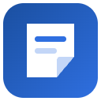
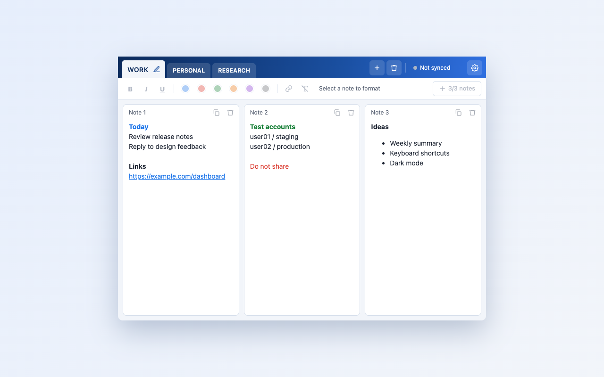

Sticky Notes Sync
Quick formatted notes in your browser, synced to a Google Sheet in your own Drive.

- Folder tabs with up to three side-by-side notes each
- Bold, italic, underline, text colors and clickable links
- Saves automatically and works offline
- Sign in with Google to sync between computers. Notes live in a spreadsheet in your own Drive; the extension can only access files it created
- Works in Chromium browsers: Chrome, Edge, Brave and more